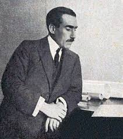
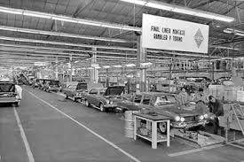
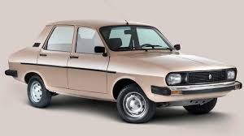
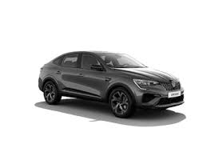

Historia de Renault
La historia de Renault comenzó en 1898 en Billancourt, Francia, cuando Louis Renault, junto a sus hermanos Marcel y Fernand, construyó su primer automóvil: el Renault Voiturette Type A. Louis, apasionado por la mecánica, diseñó un vehículo ligero con transmisión por eje y engranajes, una innovación que mejoraba notablemente la eficiencia y el rendimiento frente a los autos de la época.
Tras la Primera y luego la Segunda Guerra Mundial, Renault amplió su producción de vehículos comerciales y utilitarios. Modelos como el Renault KZ y el Primaquatre fueron populares por su durabilidad. Durante los años 30 la marca se consolidó como una de las más importantes de Europa, aunque la ocupación y los conflictos marcaron su historia durante la guerra.
El Renault 12, presentado en 1969, fue diseñado como un auto familiar, económico y fiable, adaptado a muchos mercados del mundo. Con el paso de las décadas Renault continuó diversificando su gama y apostando por la innovación técnica y el diseño.
En los años recientes Renault se ha volcado también hacia la movilidad sostenible y la electrificación, con modelos y conceptos orientados a reducir emisiones y mejorar la conectividad. Ejemplos modernos como el Arkana muestran la evolución estética y técnica de la marca.